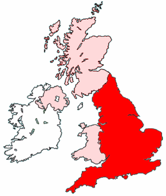
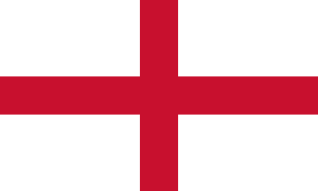
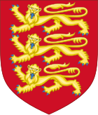

Engleska je država u Europi te zajedno sa Sjevernom Irskom,Walesom i Škotskom čini Veliku Britaniju
Glavni grad je London
Površina: 130 395 km2
Broj stanovnika(2022.):56 550 138

Zastava Engleske predstavlja križ svetog Jurja.
Crveni križ kao simbol prvi put se pojavljuje tijekom srednjeg vijeka i križarskih ratova i predstavlja jedan od najranijih engleskih simbola.
Status zastave dobiva tijekom 16. stoljeća.

Grb Engleske je grb koji su monarsi Kraljevine Engleske povijesno koristili kao grb dominacije, a sada se koristi kao simbol Engleske općenito.